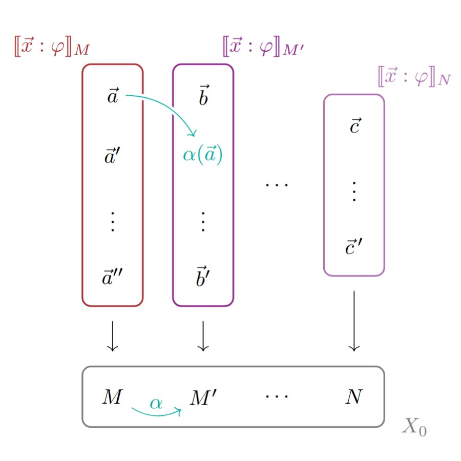

<!DOCTYPE html>
<html lang="en_UK>
<head>

<meta name="google-site-verification" content="ybpGqW0Fo_7szeqYJRGTEy5kT5kZ8lEbx6AOJtoyaj8" />

<meta charset="UTF-8">
<meta name="viewport" content="width=device-width, initial-scale=1">

<title>Joshua Wrigley</title>

<style>

body {font-family: Georgia; padding: 30px; text-align: center; background: honeydew;}

.contentbox {padding: 30px; background: lightcyan;}


/* The header */

.textbox {margin: auto; text-align: justify; width: 50vw;}

.flex-container-header {
  display: flex;
  align-items: stretch;
  flex-wrap: wrap;
}

.flex-container-header-subdiv {
  flex: 20%;
  text-align: justify;
}

.portrait {
  flex: 20%;
  min-width: 100px;
  padding: 10px;
  margin: 5px;
}


/* The main body */

.flex-container {
  display: flex;
  align-items: stretch;
  background-color: gainsboro;
  flex-wrap: wrap;
  padding:5px;
}

.flex-container>div {
  background-color: darkseagreen;
  color: white;
  flex: 20%;
  text-align: justify;
  min-width: 100px;
  max-width: 400px;
  padding: 10px;
  margin: 5px;
}

p a:link {color: inherit; text-decoration: none;}
p a:visited {color: inherit; text-decoration: none;}
p a:hover {color: inherit; text-decoration: underline;}


/* The Navbar */


.navbar {
  display: flex;
  background-color: grey;
}


.navbar a {
  color: white;
  padding: 14px 20px;
  text-decoration: none;
  text-align: center;
}


.navbar a:hover {
  background-color: gainsboro;
  color: black;
}

@media screen and (max-width: 300px) {
  .navbar {   
    flex-direction: column;
  }
}


</style>
</head>
<body>

<div class="contentbox">
	<h1 style="font-size: min(8vw,40pt);">Joshua L. Wrigley</h1>
	
	<div class="textbox">


	<! ---- Header ---- >
	<div class="flex-container-header">

	<div class="flex-container-header-subdiv">
	<p>I am a PhD student of <a href="https://www.oliviacaramello.com/" target="_blank">Olivia Caramello</a> at the <a href="https://www.uninsubria.it/hpp/joshua-liam.wrigley#0" title="My (empty) departmental webpage." target="_blank">University of Insubria</a>, studying topos theory.

	<p>My research involves the geometric representation of mathematical logic.  In practice, that means I study geometrically inspired generating data for classifying toposes.</p>

	<p>E-mail: <a href="mailto:jwrigley@uninsubria.it">jwrigley@uninsubria.it</a>
	<br>
	Address: Via Valleggio n. 11, 22100 Como CO.
	<br>
	My CV is available <a href="CV/CV-Wrigley.pdf" target= "_blank" title="An academic CV.">here</a>.
	</p>
	</div>

	<div class="portrait">
	
	</div>

	</div>
</div>


<div class="flex-container">

<div>
	<a href="https://arxiv.org/abs/2306.16331" target="_blank">
	
	</a>
	<p><a href="https://arxiv.org/abs/2306.16331" target="_blank" title="arXiv:2305.15209"><b>On topological groupoids that represent theories,</b></a>
	Preprint (2023).</p>
</div>

<div>
	<a href="https://arxiv.org/abs/2305.15209" target="_blank">
	
	</a>
	<p><a href="https://arxiv.org/abs/2305.15209" target="_blank" title="arXiv:2305.15209"><b>The representing localic groupoid for a geometric theory,</b></a>
	with Graham Manuell, Preprint (2023).</p>
</div>

<div>
	<a href="https://www.youtube.com/watch?v=R8LnkXyzQLw&t=1s" target="_blank">
	
	</a>
	<p><a href="https://www.youtube.com/watch?v=R8LnkXyzQLw&t=1s" target="_blank" title="A YouTube recording."><b>The geometric and sub-geometric completions of doctrines,</b></a>
	Talk at SYCO11 (2023).</p>
</div>


<div>
	<a href="https://arxiv.org/abs/2304.07539" target="_blank">
	
	</a>
	<p><a href="https://arxiv.org/abs/2304.07539" target="_blank" title="arXiv:2304.07539"><b>The geometric completion of a doctrine,</b></a>
	Preprint (2023).</p>
</div>


<div>
	<a href="https://arxiv.org/abs/2301.00961" target="_blank">
	
	</a>
	<p><a href="https://arxiv.org/abs/2301.00961" target="_blank" title="arXiv:2301.00961"><b>Some properties of internal locale morphisms externalised,</b></a>
	Preprint (2023).</p>
</div>

<div>
	<a href="https://www.youtube.com/watch?v=KB3MYRVPc34" target="_blank">
	
	</a>
	<p><a href="https://www.youtube.com/watch?v=KB3MYRVPc34" target="_blank" title="A YouTube recording."><b>A topos-theoretic perspective on properly discontinuous actions,</b></a>
	Talk at 2nd ItaCa workshop (2021).</p>
</div>


</div>


</body>
</html>